LIFE DETECTION BY MEANS OF METABOLIC EXPERIMENTS
Gilbert V. Levin and George R. Perez*
*Life Systems Division, Hazleton Laboratories, Inc., Falls Church,
Virginia
Reprinted from The Search for Extraterrestrial Life, Volume 22, Advances
in the Astronautical Sciences Series, 1967, a publication of the American
Astronautical Society, Publications Office, P.O. Box 746, Tarzana, California
91356.
The concept
of an extraterrestrial microbial life detection instrument which can serve
either as a minimum biological payload or a sub-system for a fully automated
biological laboratory is described. Five separate biological experiments look
for life through distinct, but related, “metabolic windows.” The experiments
are conceived as ranging from minimally geocentric to moderately geocentric.
Depending on the nature of the responses obtained, positive results would yield
some degree of information concerning the biochemistry of the living processes
encountered. The specific metabolic experiments are based on: (1) the metabolism
of radioactive substrates with the evolution of labeled gases, (2) the
detection of photosynthesis in a heterotrophic-autotrophic system, (3) the
detection of photosynthesis in strict autotrophs, (4) the detection of
intracellular adenosinetriphosphate, and (5) the metabolic uptake of
phosphorus. These experiments are integrated in a fashion which requires only a
single readout system. Some of the experiments require active sample
acquisition while others operate in situ. In addition to the
biological measurements, various physical measurements of biological
significance will be made by the instrument, A new, in situ,
model of Gulliver will be shown and its relevancy to the integrated instrument
discussed.
INTRODUCTION
Increasing
emphasis is being placed by NASA upon the concept of conducting the search for
extraterrestrial life by means of a fully automated laboratory1. The
laboratory would be landed in a capsule weighing several thousands of pounds.
One NASA publication2 recommends that the automated laboratory
contain three classes of experiments: 1. chemistry, 2. metabolism, and 3.
reproduction. The latter two classes are cited as constituting the most
positive tests for life.
While NASA
thinking embraces the large laboratory concept, sometimes known as the
“automated biological laboratory,” it also continues to consider the “minimum
biological payload” and the theory that any lander should contain life
detection experiments3. The latter is a less sophisticated concept
than the automated biological laboratory, but would incorporate several
different approaches to life detection. The fully automated laboratory must
await the development of an appropriate array of experiments, the laboratory
itself, advanced propulsion systems, and a technology to insure sterilization
of so large a capsule. The minimum biological payload offers fewer
developmental problems and could be delivered with a smaller propulsion system,
or in multiple units by the propulsion system required for the fully automated
laboratory. Obviously, each approach has its advantages and disadvantages. At
the present time, it is difficult to say whether one or both will be used.
Certain
biological and engineering considerations to be discussed herein indicate the
possibility of developing an integrated life detection instrument incorporating
important metabolism and growth experiments. In addition, the instrument could
make determinations of several significant physical parameters. The device
might be incorporated bodily as a subsystem of a future fully automated life
detection laboratory or could serve as a minimum biological payload in itself.
Work on several aspects of this subsystem has recently be in the Life Systems
Division of Hazleton Laboratories.
BIOLOGICAL EXPERIMENTS
The following
experiments, believed to be biologically complementary and physically
compatible, are proposed for a subsystem designed to detect extraterrestrial
growth and metabolism.
1. Metabolism of Radioactive Substrates
and Evolution of Labeled Gases
This experiment4,5,6, called “Gulliver,” offers radioactive substrates containing C14 and S35 in aqueous solution to the samples suspected of containing microorganisms. If organisms are present and can metabolize one or more of the labeled substrates, the production of radioactive gas is likely. If growth or reproduction takes place, this is indicated by an exponential increase in radioactive gas produced. In the event metabolism occurs without growth or reproduction, this is also evident. The curve produced by the test is compared to that obtained from an inhibited control.
Recently, an in situ version of Gulliver, shown in Fig. 1, was developed7 and its use is contemplated in the proposed subsystem. It offers advantages in sensitivity in that it does not disturb the microenvironment by mechanical sampling. Furthermore, its design and operation are more compatible with the integration of the other experiments herein proposed. Results of its first simulated field test are presented in Fig. 2.
2. Detection of Photosynthesis,
Heterotrophic-Autotrophic System
In this experiment, carbon labeled substrates are supplied in aqueous form to the soil sample. Organisms capable of heterotrophic assimilation of one or more of the substrates and capable of photosynthesis can be detected by monitoring the production of radioactive carbon dioxide when the sample is alternately exposed to light and dark8. Algae tested in this experiment evolved C14O2 in the dark, but not when photosynthesizing in the light. Fig. 3 shows the rapidity with which the response follows the manipulation of light and dark periods.
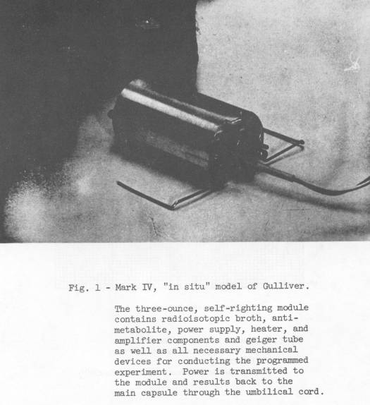
3. Detection of Photosynthesis,
Autotrophic System
A modification of the above experiment makes it possible to detect strict phototrophs. In this experiment9 the sample is simultaneously exposed to light and C14O2. After a suitable period, the light is excluded and the unassimilated C14O2 replaced with planetary atmosphere. The sample is then maintained in the dark and monitored for the evolution of C14O2. If photosynthetic organisms had fixed C14O2 in the light, when placed in the dark they would be expected to consume energy compounds recently photosynthesized and thereby release C14O2 in a process paralleling endogenous respiration. Table 1 presents data obtained in such an experiment on algae.
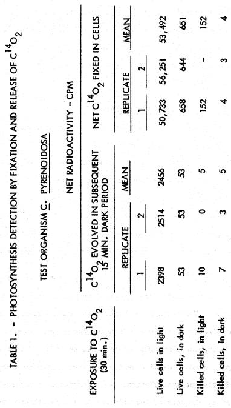
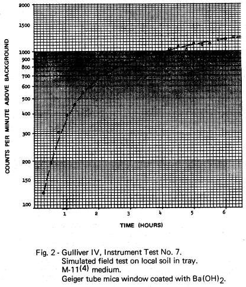
In the case of a Mars lander, this experiment might be considered as having a very low order of geocentricity. Except for the introduction of tracer quantities of C14O2 into an atmosphere known to be rich in CO2, no changes in the Martian ambient environment are required in :he conduct of the experiment.
4. Firefly Bioluminescent Assay for
Microbial Adenosinetriphosphate (ATP)
This life detection experiment10,11,12 is based upon the sensitivity and specificity of the firefly lantern bioluminescent system for ATP and upon the ubiquity of ATP in all known biological forms. The bioluminescent reactants of the firefly lantern - luciferase, luciferin, magnesium and oxygen – are readily extracted in usable form. When ATP is injected into this system, light is instantaneously produced.
In a life detection test, a sample suspected of containing microorganisms is treated in a manner to extract ATP. An aliquot of this extract is injected into a cuvette containing the firefly lantern extract preparation. If ATP is present in the sample, light is emitted, reaching a maximum intensity proportional to the quantity of ATP in less than one second. The entire procedure, including sample preparation, can be completed in approximately two minutes. Typical results are presented in Fig. 4.
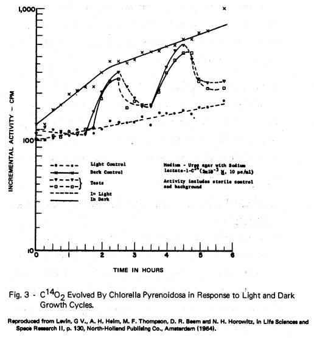
5. Metabolic Uptake of Phosphorus
Every known biological reaction is ultimately dependent upon phosphorus for energy conversion and transfer13. Furthermore, all known organisms are believed to be fastidious as to the form in which phosphorus may be accepted from the environment, as orthophosphate14. The chemical fact of the high-energy storage capacity of resonant bonds polymerizing phosphate ions makes phosphorus a strong candidate for a role in almost any conceivable form of extraterrestrial life.
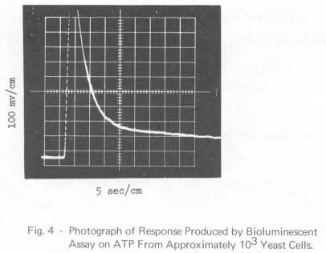
Fig. 5 presents the results of an experiment15 of particular interest to this proposed extraterrestrial life detection scheme. Two cultures of mixed organisms in sewage containing dissolved, inorganic orthophosphate, were supplemented with succinate and glucose and then aerated. One of the flasks also received 2,4-dinitrophenol, known to uncouple oxidative phosphorylation. At intervals over a five-hour period, aliquots of the wild cultures were filtered to remove the microorganisms and the filtrate was analyzed for orthophosphate. The depletion of orthophosphate in the organism-free filtrate represents the amount of orthophosphate taken up by the microorganisms. Within the experimental period, roughly 85% of the approximately 3.5 mg/L of phosphate phosphorus available to the organisms was taken up by the uninhibited culture. In the culture containing the uncoupling agent, the phosphate uptake was only approximately 10%. Comparable results have been obtained when no added substrates were supplied to the sewage. Fig. 6 demonstrates the “luxury” uptake of orthophosphate. By comparing orthophosphate uptake and bacterial population curves, it is seen that uptake continued even when the population was in decline.
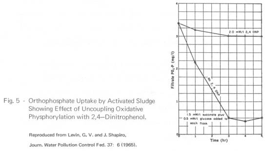
6. Metabolic Uptake of Sulfur
An experiment very similar to that described above for phosphorus uptake will seek to detect the metabolic uptake of sulfur as an index of life. This vital element can be supplied as the radioisotope s35 since the half life is sufficiently long for a Mars voyage and experiment. Various compounds of sulfur could be supplied to the sample.
The importance of sulfur uptake as an exobiological experiment is emphasized not only by its occurrence in all terrestrial life, but also by the fact that high-energy sulfur bonds could conceivably mediate extraterrestrial biological energy transfers in a manner analogous to the role of high-energy phosphate bonds.
PHYSICAL MEASUREMENTS
By virtue of the
fact that they can readily be measured by the sensors required for the
biological experiments, or by easily added sensors, the following biologically
important environmental parameters could be determined by the life detection
subsystem.
1. Background Radiation
The planetary surface background at the sampling site can be determined by the radiation detection system used in the tracer experiments through the incorporation of appropriate scintillators.
2. Temperature
Temperature will be monitored in conjunction with all metabolism, growth, or reproduction experiments to permit better interpretation of the data. The same temperature sensor can be used to determine surface temperature.
3. Oxygen
If photosynthesis is detected, it is important to know whether oxygen is produced, as in the case with algae, or whether it is not as in the case of photosynthetic bacteria. To determine this, an oxygen electrode would be incorporated into the photosynthesis experiments. This electrode can be used to determine the oxygen concentration in the planetary atmosphere.
4. Ambient Light Intensity
Photomultiplier tubes are proposed as the primary sensors for the biological experiments. A relatively simple system utilizing an appropriate range of neutral density filters might be used in conjunction with the photomultiplier tubes to make periodic readings of the light intensity at the surface of the planet.
5. Soluble Orthophosphate Content of
the Soil
In the phosphate uptake experiment, the phosphate concentration of the medium will be known. If a known volume of the soil is introduced into the medium in starting the experiment, and the soil and medium are mechanically mixed, any orthophosphate present in the sample will go into solution. A “zero-time” determination of the orthophosphate concentration in the liquid phase immediately after mixing would reveal the amount of dissolved orthophosphate contributed by the sample.
6. pH of Soil
In any experiment involving culturing of microorganisms, the pH of the culture is important to the interpretation of the results. A pH electrode can be incorporated for this purpose. If so, the “zero-time” determination of pH in the phosphate uptake experiment would provide information on the pH of the soil sample.
COMPLEMENTARY NATURE OF EXPERIMENTS
1. Biology
The six biological experiments discussed cover a broad range of biochemical reactions fundamental to terrestrial life. They are designed to probe for possible extraterrestrial forms of life through discrete and important metabolic windows. The degrees of geocentricity inherent in the experiments range from low to moderate. Thus, extraterrestrial life might not only be detected, but some preliminary information concerning its similarity or dissimilarity to terrestrial life might be obtained. Moreover, all of the proposed experiments are interrelated metabolically. Thus, although six separate and distinct thrusts are made, the array of experiments offers the redundancy so important to new explorations in space.
The experiments proposed for the life detection subsystem seek to detect metabolism involving carbon, sulfur, oxygen or phosphorus singly or in combination. The relatively uniform respective abundances of these elements throughout the known universe reinforce their potential importance to extraterrestrial life. Furthermore, with the exception of ATP, the proposed life detection subsystem views these elements in simple chemical species. This increases the likelihood of their metabolic involvement at the interface between the environment and the living system. The abundance of these simple chemical species is probably greater than that of specific, or complex molecules incorporating the same elements and hence their availability to evolving life systems is correspondingly greater11.
The ATP detection experiment assumes a higher order of geocentricity than any of the other experiments proposed for the life detection subsystem. This is because the molecule is moderately complex and, therefore, less likely to have been genetically incorporated into the evolutionary process of an alien biology11. On the other hand, herein would lie the virtue of the experiment were a metabolic role for ATP demonstrated on another planet. Since ATP is ubiquitously involved in cellular biochemistry on Earth, a strong similarity between the two biochemical systems would be indicated by a positive extraterrestrial finding. A significant step toward biochemical classification of the organisms would have been achieved In doing so, the metabolic role of ATP would have to be established, as might be done by demonstrating that the quantity of ATP in a culture of the organisms increased with time.
The interrelationships of these distinct life-seeking experiments are illustrated in Fig. 7, a schematic showing the aerobic utilization of carbohydrates. This figure clearly demonstrates the complementary nature of carbon substrate metabolism, carbon dioxide production, uptake of orthophosphate, ATP production and, to a limited extent, the involvement of sulfur (in TPP). The operation of these important biochemical pathways could be detected by any one of these parameters. In this sense. as far as terrestrial type life is concerned, they are redundant. With regard to extraterrestrial life, these relationships might be similar, drastically different or nonexistent. The separate experiments will provide this information while, more importantly, each serves as an independent life probe without regard for the specific metabolic pathway.
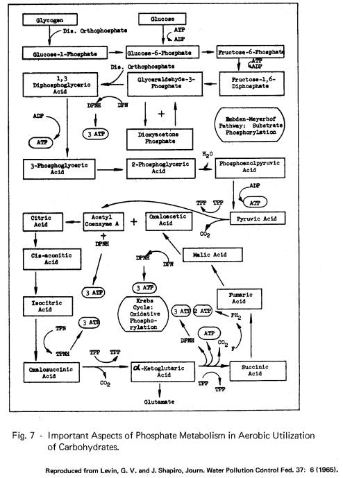
As an example of the interpretation which might be applied to data obtained, suppose the orthophosphate uptake and ATP production experiments were both to yield positive results. This would be an indication that ATP was being produced by phosphorylation and, hence, that the biochemistry was consistent, to this extent, with terrestrial intermediary metabolism. On the other hand, if a positive response were obtained from the orthophosphate experiment but not from the ATP experiment, this would be evidence for a different biochemistry than we know. Similar interrelationships among all of the life detection indices proposed can be deduced from Fig. 7. Reference to metabolic charts on photosynthesis would establish the same interrelationships for the phototrophic tests. For example, the CO2 acceptor in photosynthesis is probably ribulose-1,5-diphosphate, formed by a phosphorylation reaction between ribulose-5-phosphate and ATP16.
2. Instrumentation
Four of the experiments, those supplying labeled substrates or C14O2, produce data in the form of radioactivity measurements. In the development of these experiments, thin window geiger tubes have been used as the sensors. It is possible, however, through the use of plastic scintillators, to convert the beta particle radiation of these experiments into photons which can be measured by a photomultiplier tube17. Such a photomultiplier system is used to measure ATP content by the firefly bioluminescent assay. Finally, a newly proposed method designed to increase the sensitivity of the phosphate assay through the formation of a C14 complex can also be read out by the system. Thus, all of the biological experiments proposed for the life detection subsystem can be performed with a common sensor and readout system.
A high degree of compatibility in other experimental systems is attainable for the life detection subsystem. Of the six biological experiments proposed, only three require sample acquisition, the ATP assay and the phosphate and sulfur uptake experiments. If the life detection subsystem becomes a part of a fully automated biological laboratory, a single sample from the central sampling system is all that is required. Should the life detection subsystem constitute the entire biological payload of the capsule, it will have to obtain its own sample. Again, a single sample will satisfy the requirements. The ATP assay and phosphate and sulfur uptake experiments can be accommodated by a single culture chamber. The ATP, phosphate and sulfur assays can be made from aliquots taken from this culture. The mechanical handling and transfer operations associated with these three experiments can also be combined. The remaining three biological experiments are performed in situ. Of these, the experiments monitoring the metabolism of radioactive substrates and photosynthesis detection through the use of radioactive substrates can probably be combined into a single physical unit.
The processing which will be performed in conducting the biological experiments is shown in Fig. 8. The proposed instrument layout is shown in Fig. 9.
A preliminary concept for the preparation system for the ATP experiment is shown in Fig. 10. In order to preclude contamination of one sample by another, each assay preparation is packaged and transported in an individual, one-use container. For example, after the culture aliquot is extracted for ATP, the aliquot for assay is introduced into such a one-use container. The firefly lantern extract is similarly prepared in its own container. The two containers are transported to adjacent positions above the assay reaction chamber. A dual piston action discharges and mixes the solutions in the reaction chamber where the reaction takes place and is monitored. Identical or similar systems will serve the PO4 and sulfur uptake experiments.
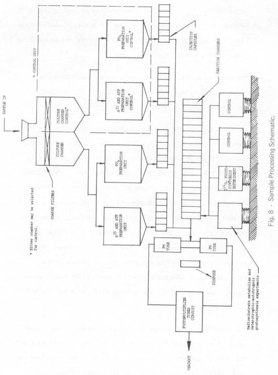
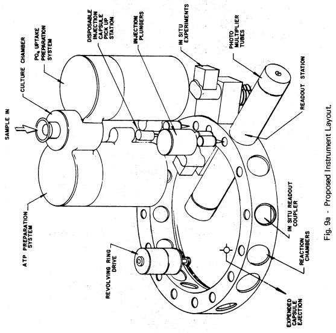
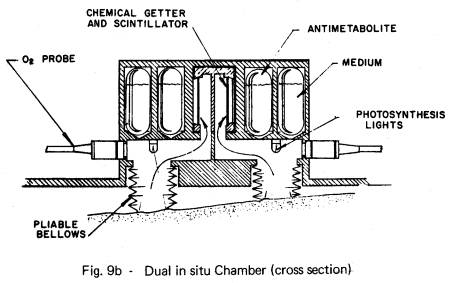
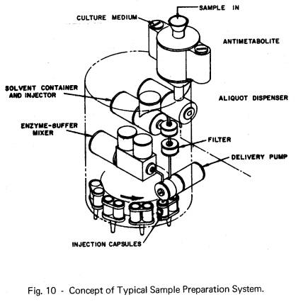
The final transport system in this preliminary concept consists of a revolving ring containing an array of test chambers. This ring accommodates each assay to be made and positions each, including those from the in situ experiments, in front of the readout station. Once a readout is obtained, the revolving ring indexes and a fresh test chamber is positioned in front of the readout station. The entire operation is programmed so that the ATP, PO4. and sulfur experiments are read at desired intervals as are the in situ experiments. Readings for the latter are accommodated by a special chamber in the revolving ring. This chamber effects an optical coupling between the plastic scintillator and the photomultiplier tubes. The in situ experiments are located below the readout chamber for this reason.
The in situ experiments are patterned after that developed in the radioactive substrate program7. A photograph of the miniaturized in situ instrument produced is shown in Fig. 1.
After the life detection capsule, or the fully automated biological laboratory containing it, lands on the surface of the planet. sliding windows will open allowing spring-loaded flexible bellows to extend downward until they make contact with the surface. Soft corrugated lips on the bellows will press tightly against the surface contour by virtue of the spring pressure. Four chambers, formed in this manner, will be sufficient for the three in situ experiments. In two of the chambers, sealed glass ampuls will contain the radioactive medium and the antimetabolite required in the radioisotope substrate and heterotrophic-autotrophic experiments. Non-explosive pyrotechnic actuators will break the ampuls and the liquids will be conveyed to the soil by wicks. Heat sensors in the lips of the bellows will control heating elements in each chamber so that the surface will be maintained above freezing. A programmed light source will be incorporated into these in situ chambers to perform the photosynthesis experiments.
The remaining two chambers will contain the autotrophic photosynthesis experiment. An ampul of C14O2 will he released in each. Each will also contain a programmed light source.
In any of the in situ experiments, either of the dual chambers can serve as test or control. In the event one chamber becomes inoperative, the tests will be conducted in the remaining chamber. This will obtain the maximum value from the experiment in the event of partial failure due to unforeseen circumstances.
TENTATIVE FINAL SPECIFICATIONS
Based on
current knowledge and making necessary assumptions regarding the development
program, tentative specifications for the life detection subsystem are as
follows:
LIFE DETECTION SUBSYSTEM
TENTATIVE SPECIFICATIONS
Basic
Instrument
weight - 18±3 pounds
size - 11 in. x 11 in. x 10 in.
volume - 1210 cu. in.
Sample
Collection System (If
instrument serves as minimum biological capsule)
weight - 3±1 pounds
size and volume to be determined
Power -
Instrument Operation
standby and transit - 0 watts
operating max. - 10 watts
total power - 30 watt
minutes
Power -
Temperature Control
standby and transit - 0 watts, less than 15° C. desired
operating max. - depends on configuration - to maintain 5º C. - 15° C. in
cultures
Data
Acquisition Duty Cycle
Biological Experiments: 6
readouts each at 0, 3, 10, 20, 50 and 100 hr.
Environmental
Measurements: 4 readouts each at 0, 3,
10, 20, 50 and 100 hr.
Telemetry
50 bits per readout = 3000 bits
ACKNOWLEDGMENTS
The
developmental work toward the life detection subsystem is supported under
contract with the Office of Bioscience Programs of the National Aeronautics and
Space Administration. Dr. Norman Horowitz, Division of Biology, California
Institute of Technology, is co-experimenter on the Gulliver experiment.
The firefly
bioluminescent ATP assay has been developed as a life detection method with
support from the U. S. Navy, Bureau of Naval Weapons and now the Goddard Space
Flight Center of NASA. Dr. Norman MacLeod of GSFC is co-investigator on the
development of the method for upper atmosphere and planetary exploration.
NOTES AND REFERENCES
1. Biology
and Exploration of Mars, 1964 Summer Study, Space Science Board, U.S. Nat. Ac.
Sci. - Nat. Res. Council, sponsored by NASA, as reported in Proposed Biological
Exploration of Mars Between 1969 and 1973, Nature 206, No. 4988, 974, 1965
2. R.
S. Young, R. B. Painter and R. D. Johnson, An Analysis of the Extraterrestrial
Life Detection Problem, Ames Research Center, National Aeronautics and Space
Administration, Washington, D. C., 1965
3. Report
of Gordon MacDonald committee, Space Science Board, Nat. Acad. Sci., as
reported in Unmanned Planetary Mission Stressed in Missiles and Rockets 18,
4, 15, 1966
4. G.
V. Levin, A. H. Heim, J. R. Clendenning and M. F. Thompson, “Gulliver” - A
Quest for Life on Mars, Science 138, 114, 1962
5. G.
V. Levin, A. H. Heim, M. F. Thompson, N. H. Horowitz and D. R. Beem, “Gulliver”
- An Experiment for Extraterrestrial Life Detection and Analysis, in Life
Sciences and Space Research II, Florkin, M. and Dollfus, A., eds.,
North-Holland Pub. Co., Amsterdam, 1964
6. Radioisotope
Biochemical Probe for Extraterrestrial Life, Annual Reports, NASA Contract No.
NASr-10, Hazleton Laboratories, Inc., Falls Church, Va. (Resources Research,
Inc., Washington, D. C. ), 1962-1965
7. Radioisotope
Biochemical Probe for Extraterrestrial Life, Quarterly Progress Report No. 17,
NASA Contract No. NASr-10, Hazleton Laboratories, Inc., Falls Church, Va., 1965
8. Op.
cit. 6, 1964
9. Op.
cit. 6, 1965
10. G.
V. Levin, J. R. Clendenning, E. W. Chappelle, A. H. Heim and E. Rocek, A Rapid
Method for Detection of Microorganisms by ATP Assay; Its Possible Application
in Virus and Cancer Studies, BioScience 14, No. 4, 1964
11. G.
V. Levin and A. H. Heim, Gulliver and Diogenes - Exobiological Antitheses, in
Life Sciences and Space Research III, Florkin, M., ed., North-Holland Pub. Co.,
Amsterdam, 1965
12. The
Design and Fabrication of an Instrument for the Detection of
Adenosinetriphosphate (ATP), Final Report, Goddard Space Flight Center Contract
No. NAS5-3799, Hazleton Laboratories, Inc., Falls Church, Va., 1965
13. A
Symposium on Phosphorus Metabolism, McElroy, W. D. and Glass, B., eds., The
Johns Hopkins Univ. Press, Baltimore, 1951
14. B.
J. Katchman, Phosphate in Life Processes, in Phosphorus and Its Compounds, Vol.
II, Van Wazer, ed., p. 1283 et seq., Interscience Pub., Inc., New York, 1961
15. G.
V. Levin, Metabolic Uptake of Phosphorus by Sewage Organisms, doctorate
dissertation, The Johns Hopkins Univ., Baltimore, 1963
16. J.
S. Fruton and S. Simmonds, General Biochemistry, second edition, p. 551, Wiley
and Sons, Inc., New York, 1960
17. G.
Hardie, C. C. Preston and J. Ezop, A Study of the Feasibility of Using
Scintillating Fibers for Low Energy Beta Counting, Illinois Institute of
Technology, AEC Contract IITRI-578P26-8, 1965